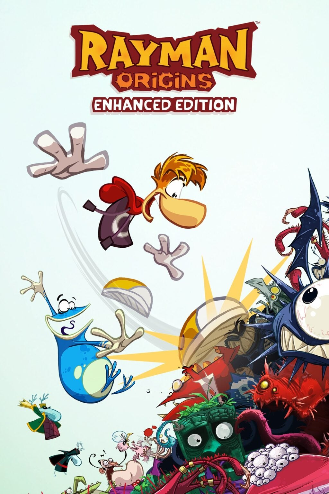
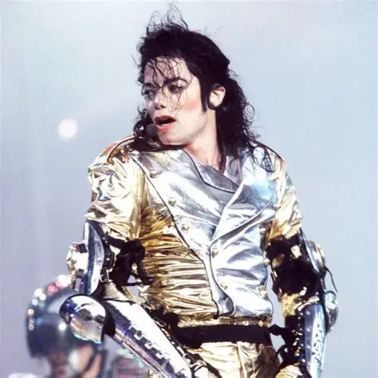
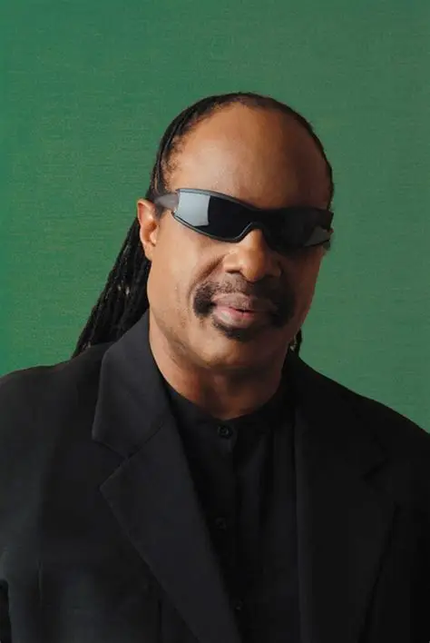

Rayman Origins to kolorowa gra platformowa pełna humoru. Można w niej odkrywać piękne poziomy i pokonywać przeciwników. Gra wyróżnia się ręcznie rysowaną grafiką i świetną muzyką.

Super Mario World to klasyczna gra Nintendo z 1990 roku. Mario przemierza w niej krainę Dinosaur Land, aby uratować księżniczkę Peach. Gra oferuje wiele sekretów, poziomów i możliwość podróżowania na Yoshi.
Super Mario Odyssey to przygodowa platformówka na Nintendo Switch. Mario podróżuje po różnych królestwach, aby uratować Peach przed Bowserem. Dzięki czapce Cappy może przejmować kontrolę nad różnymi stworzeniami.
Muzyka klasyczna obejmuje utwory kompozytorów takich jak Mozart i Beethoven. Często wykorzystuje orkiestrę, fortepian i skrzypce. Potrafi być spokojna, wzruszająca albo bardzo dynamiczna.
Michael Jackson był jednym z najbardziej znanych artystów muzyki. Nagrał przeboje takie jak „Thriller” i „Billie Jean”. Słynął z charakterystycznego tańca, niezwykłych teledysków i wyjątkowego głosu.

Stevie Wonder to amerykański piosenkarz, kompozytor i multiinstrumentalista. Do jego znanych utworów należą „Superstition” i „Isn't She Lovely”. Jego muzyka łączy różne style muzyczne.
